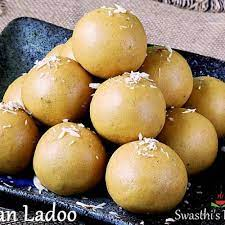

Besan Ladoo

What is Besan ladoo?
Bandar laddu is a sweet produced in Machilipatnam of Krishna district in the Indian state of
Andhra Pradesh. It
was registered as one of the geographical indication from Andhra Pradesh on 3 May 2017, under foodstuff by
Geographical Indication Registry.
Ingredients
- 1 ¼ pounds ghee (clarified butter)
- 2 pounds chickpea flour (besan)
- 6 cups confectioners' sugar
- 1 tablespoon ground cardamom
- milk, as needed
Steps to Make
- Heat the ghee in a skillet over medium-low heat. Stir the chickpea flour into the ghee and cook until golden
brown and has a nutty smell. You cannot miss the fragrance of roasted besan. It will perfume the entire
house. Turn off the heat and let the besan cool till just warm.
- Stir the confectioners' sugar and cardamom into the flour mixture. Pinch the mixture together with your
fingers. It should hold the shape. If not, sprinkle some milk till the mixture is able to bind together.
Form the mixture into lime-sized balls and roll between your palms till smooth and even. Serve.